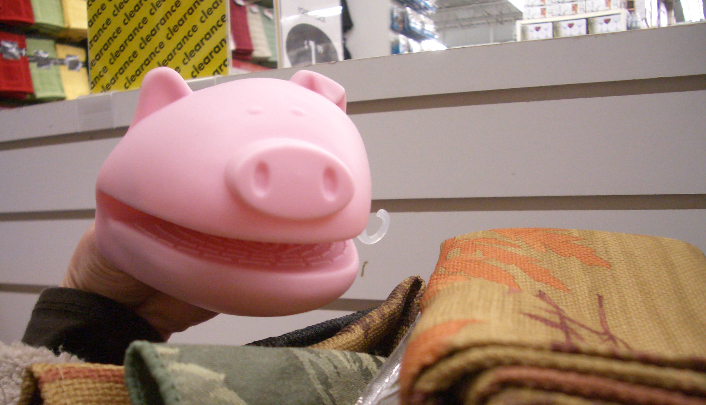

Wednesday, October 29, 2008
Are Weddings in the Beyond Section?
I've been waiting to wield the gun for a long, long time: the magical wedding registry gun that puts unbridled consumerism in the palm of my hand at no financial cost to myself. *POW* buy us this. *ZAP* buy us that. I'm usually not a materialistic super shopper, but in this case I couldn't wait.
Luckily upcoming bridal showers recently sent Kyle and I to Bed Bath & Beyond to set up our first wedding gift registry. Sadly they didn't allow us to run wild with the scanning gun. Instead we received a guide, who clearly needed to get through several contractual obligations:
1. Ask how we met. (Which she misheard as extreme frisbee, which she repeated several times.)
2. Ask for the proposal story. (Which she said was the best story she had ever heard. And I imagine she hears a lot of stories.)
3. Ask about the destination for our honeymoon. (I love the confusion/shock/awe on people's faces whenver they hear our response.)
4. Ask what kind of china we want. (We don't.)
5. Ask what kind of toasting flute we want. (We don't.)
6. Ask what kind of china we want, again. (No, really, it's ok. I have my grandmothers' china. Let's move on already. I didn't believe you when you said this process might take 3 hours, but now I do.)
It took some effort to make her understand how little we needed china or any plates of any kind, but eventually we made it into the main part of the store. She was very helpful when we had trouble choosing among different brands, though I think her attention to the finer (aka unnecessary and expensive) things in life, her repetition of "extreme frisbee," and the sheer length of the process when we had to be guided slowly through each section started to get on Kyle's nerves. Luckily he was able to entertain himself (and me) with the amazing animal potholders that doubled as hand puppets.
We never did get to hold the gun, but we were able to ask her to point it at plenty of fun things. Well, we thought it was plenty of things, but apparently we're well under the recommended number of items, which is 3x the guest count. I'm not sure there are that many items in the BB&B store, and we really don't need online offerings such as relationship remotes or an inflatable mortuary. We also turned down the rice cooker that was highly recommended by our guide, even though Kyle is incapable of cooking rice properly. (And yes he's usually a better cook than I am, but I'll take whatever victories I can get.) We ended up with about 50 items, which you can find by entering our names here if you're interested. We've also started a registry at Amazon.com, which is much more eclectic and entertaining. Some of the gift suggestions were chosen together, but many are clearly tied to one recipient. (Guess who wants Newsies and a Shakespeare watch, and who wants camping supplies and Linux books? I know, it's tricky.) It also allows for joke items like the $15,500.00 Soccer Simulator.
Despite the delight of making gift lists Kyle and I are very capable of buying things ourselves, which we proved after emerging from Beyond. We ran around to Borders, Target, the grocery store and a few other places and came home with a load of items. Our best find by far: a coffee and expresso maker, orginially over 100 dollars, for $17. It was just sitting there on the Target clearance shelf, boxless, dusty, and a little banged up but just begging us to take a chance on it. Imagine our surprise when we got it home and it actually worked! It isn't an easy one step process, in fact you might need a degree in chemistry and burn treatment in order to use it without messing up a few times, but eventually it will serve up a steaming pot of expresso and steamed milk deliciousness.

Adventures With Expresso
→


 | posted at: 09:08 |
permanent link and comments
| posted at: 09:08 |
permanent link and comments